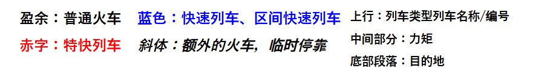
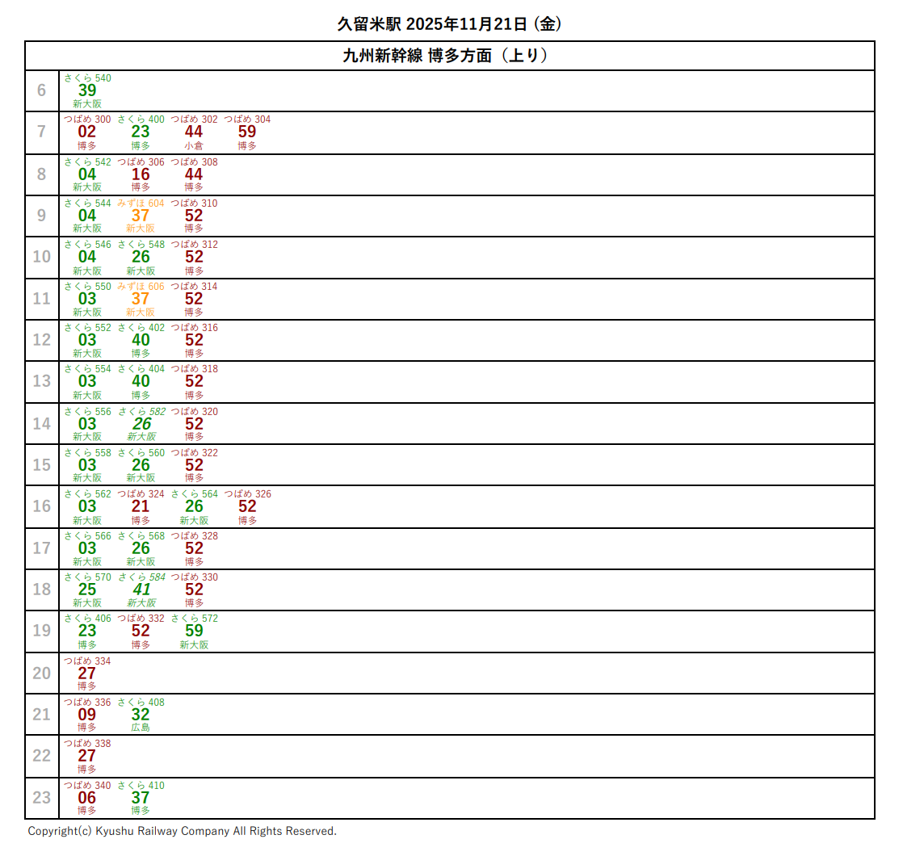
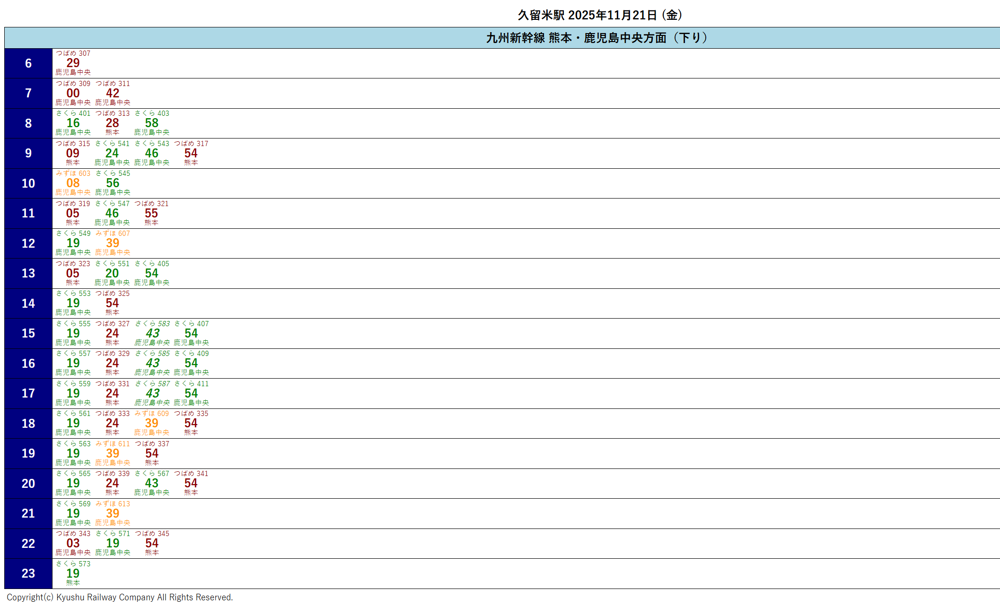
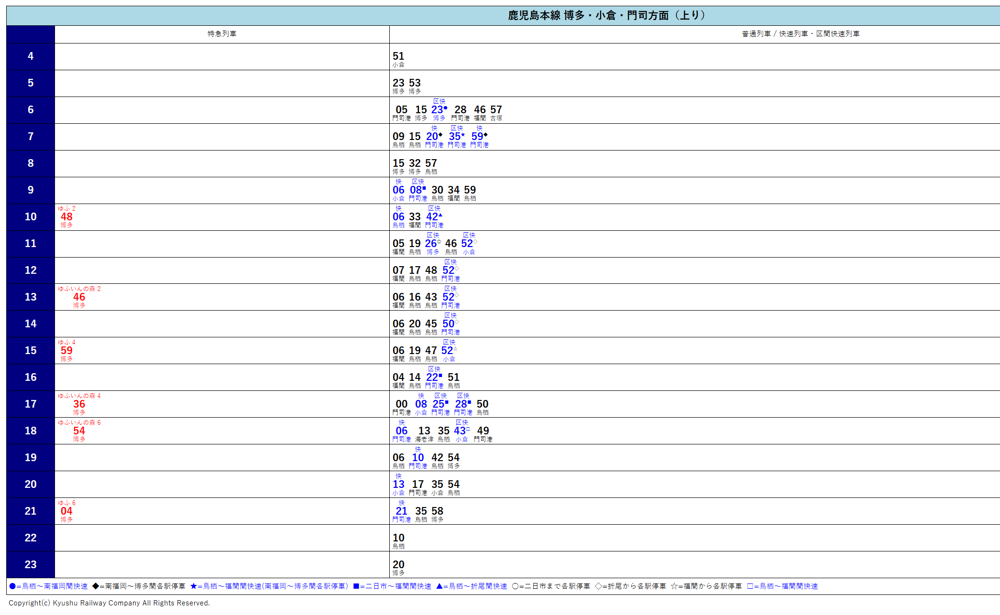
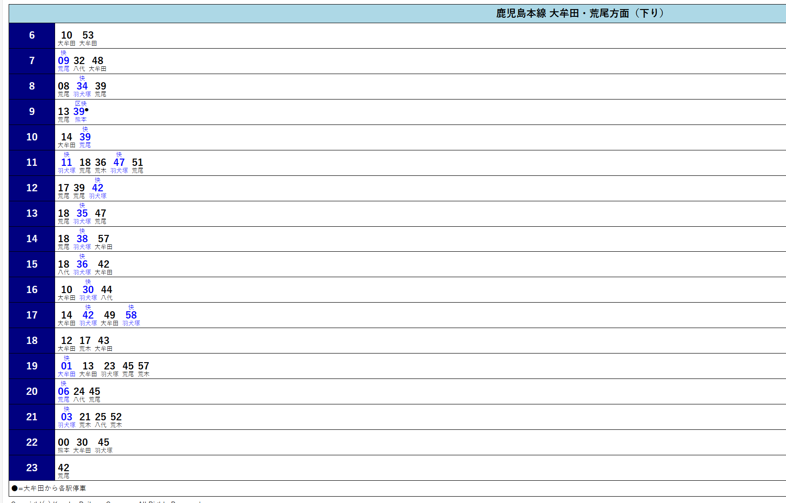
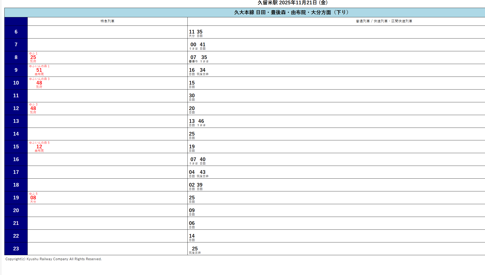

九州详细行程
抵达福冈机场
休息或到博多站/天神短逛（拉面、屋台）。
住宿：福冈（博多/天神）
市内一日通票游福冈
大濠公园 / 福冈城遗址
太宰府天满宫（Dazaifu）（乘西铁或JR+巴士约 30–50 分）(枫叶)
乘列车/快速（普通或快速列车，使用 IC 卡或单程票）前往久留米
久留米 → 大分/别府 方向
别府地狱巡游（Beppu Jigoku）（几个地狱温泉点可坐地面巴士），傍晚可去温泉旅馆泡汤。
从别府出发前往 由布院（短途特急或普通列车，约 30–60 分钟）
逛 金鳞湖、由布院散步小街、艺术馆与温泉咖啡店（适合慢慢走、拍照、泡脚）
下午/傍晚：由布院 → 久留米 返回（使用 JR Pass）
晚上：入住 久留米
久留米出发 → 前往阿苏地区
阿苏：参观 阿苏火山观景点 / 草千里（Kusasenri）
从阿苏前往 熊本市区（车程约 1 小时左右），参观 熊本城（外观/周边）、城下町短逛、尝熊本拉面。
熊本 → 久留米
久留米出发 → 乘新干线/特急向南到 鹿儿岛中央站（JR Pass 可覆盖新干线区间的普通列车/部分新干线需要确认）
乘渡轮去 樱岛（Sakurajima） 近观火山海景、访问城山公园展望台
住宿：鹿儿岛市内
选项 A（偏火山/山景）：雾岛（Kirishima）一日游（火山、喷泉、山间温泉）
选项 B（海景/体验）：指宿（Ibusuki）砂蒸温泉（体验独特的砂浴）
选项 C（轻松）：鹿儿岛市内多处自然点 + 温泉休闲
从鹿儿岛返回久留米
选项 1：柳川（Yanagawa） 乘 川下り（掘割船），赏运河风光与河畔茶室，约半天行程
选项 2：佐贺一日游，随后回久留米。
住宿：久留米
早上：久留米出发 → 长崎
下午：抵达长崎后：平和公园 / 野母崎海岸线 / 稻佐山展望台（傍晚上稻佐山看城市/港湾夜景，非常推荐）
住宿：长崎市内（1 晚）
说明：此段也在 JR Pass 有效期内（11/21–11/27），当天回程或转车均可用通票。
早上：若时间充裕可再去 出岛或滨海散步
中午：前往长崎机场
全州地图（含大交通时间）
| 交通 | 景点 |
|---|---|
 |
 |
 |
 |
久留米站时刻表
|  |  |
|  |  |
|  |  |
（部分路线时间：
久留米➡️福冈近13分钟
久留米➡️熊本近25分钟
久留米➡️由布院近90分钟
久留米➡️别府近150分钟）
ps：不是西铁久留米，两站通勤不便
各地可以去的地方初步罗列
xhs攻略参考


补充信息
JRpass价格

枫叶时间
 |
 |